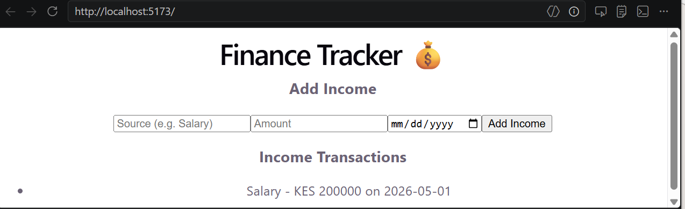

My Projects
Here are the projects I have built and contributed to during my programming course at IYF.
Finance Tracker — Income Module
A group project to build a personal finance tracker. I was responsible for the Income Module — building the IncomeForm and IncomeList components that let users add, view, and manage their income data.
Technologies used:
- JavaScript (ES6) — useState, useEffect, async/await
- React 18 — component-based UI
- JSX — writing HTML inside JavaScript
- Vite — development server and build tool
- Fetch API — sending POST requests to the backend
- REST API — connecting to the backend server
- JSON — format used to send and receive data
- Git & GitHub — version control and code storage

View on GitHubWeekly Projects (12 Weeks)
- Week 1: Web Foundations — Portfolio Site
- Week 2: CSS Mastery — Responsive Portfolio
- Week 3: Developer Tools & Workflow
- Week 4: JavaScript Fundamentals
- Week 5: DOM Manipulation
- Week 6: Asynchronous JavaScript
- Week 7: JavaScript Best Practices
- Week 8: React Fundamentals
- Week 9: React Advanced
- Week 10: Backend Basics — Node.js & Express
- Week 11: Database Integration & Authentication
- Week 12: Deployment & Final Project